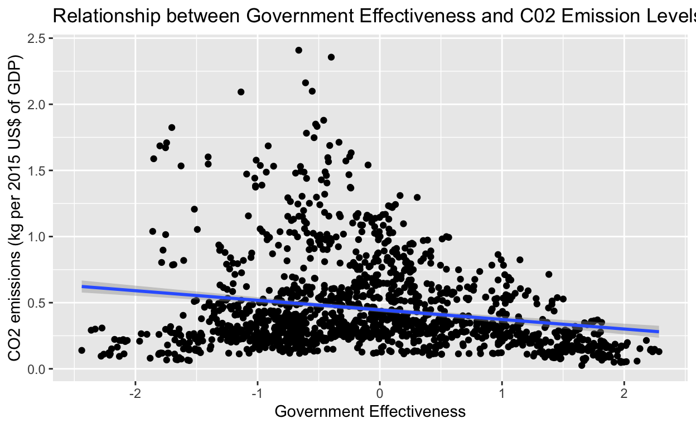

Introduction Section:
This semester, I investigated the extent to which Government Effectiveness (that is, perceptions of the quality of public services, the quality of the civil service and the degree of its independence from political pressures, the quality of policy formulation and implementation, and the credibility of the government’s commitment to such policies), impacts C02 emissions. In other words, I’m interested in exploring whether or not the effectiveness of a particular government may impact how climate conscious a particular country is, and therefore their C02 emission levels. In order to gather my data, I leveraged the World Bank Open database. I knew I was interested in analyzing the relationship between Government Effectiveness and C02 emissions. So, upon building my data set, I merged a wide assortment of variables that might be potential confounders in my primary relationship of interest. Aside from government effectiveness, I believe that population growth, educational attainment levels, and GDP may all be factors that could impact C02 emissions, regardless of government effectiveness level. I hypothesize that population growth might lead to increased vehicle use, and therefore heightened C02 emissions; higher educational attainment may yield more educated conservation practices to limit carbon footprints; and GDP may impact the ability of a particular government to invest in climate conscious, renewable, or sustainable energy alternatives.
This research proposal is interesting given the current climate crisis. The United States has had a varying level of commitment to climate change initiatives with changing Administrations recently; most notably, our removal and reentry into the Paris Climate Accord. Do countries with high government effectiveness have lower emissions? Or, do countries with low government effectiveness have lower emissions? This will be a key finding as the world comes together to fight our warming Earth.
My initial hypothesis is that Government effectiveness does not impact C02 emissions. I hypothesize that Government effectiveness only impacts C02 emissions when the party/political leader in power makes a cognizant effort to take action on Climate Change. In countries like the United States, the party in power changes quite frequently, making it difficult to sustain any changes to C02 emissions over time, though perceived government “effectiveness” might remain relatively stable over time. Additionally, China leads me to believe that higher government effectiveness may not necessarily yield lower carbon emissions. I hypothesize that China has a very effective government score due to its high policy formulation and implementation, and public and civil services. Yet, China has the highest C02 emissions in the world. So, my hypothesis is that what really matters is how progressive the government in question is. Not how effective they are, across a wide variety of measures like quality of public services, degree of its independence from political pressures, etc.
Data Section:
Source: The source of my data is the MetaGlossary World Bank Data, compiled over the span of 9 years from 2013 to 2022. This is a cross sectional data research design. The World Bank collects much of its data from from the statistical systems of member countries.
Key variables definitions and scales/units:
“Emissions” (Dependent Variable): CO2 emissions; measured in kg per 2015 US$ of GDP. [Scale: Carbon dioxide emissions are those stemming from the burning of fossil fuels and the manufacture of cement. They include carbon dioxide produced during consumption of solid, liquid, and gas fuels and gas flaring.]
Independent Variables:
“GDP”: GDP; measured in constant 2015 US$. [Scale: GDP at purchaser’s prices is the sum of gross value added by all resident producers in the economy plus any product taxes and minus any subsidies not included in the value of the products. It is calculated without making deductions for depreciation of fabricated assets or for depletion and degradation of natural resources. Data are in constant 2015 prices, expressed in U.S. dollars. Dollar figures for GDP are converted from domestic currencies using 2015 official exchange rates. For a few countries where the official exchange rate does not reflect the rate effectively applied to actual foreign exchange transactions, an alternative conversion factor is used.]
“Education”: Educational attainment, at least completed short-cycle tertiary, population 25+, total (%) (cumulative). [Scale: Statistical concept and methodology It is calculated by dividing the number of population ages 25 and older who attained or completed short-cycle tertiary education by the total population of the same age group and multiplying by 100.]
“Gov”: Government Effectiveness: Government Effectiveness captures perceptions of the quality of public services, the quality of the civil service and the degree of its independence from political pressures, the quality of policy formulation and implementation, and the credibility of the government’s commitment to such policies. Scale: [-2.5,2.5]
“Climate”: Droughts, floods, extreme temperatures (% of population, average 1990-2009). [Scale: Droughts, floods, extreme temperatures (% of population, average 1990-2009) Droughts, floods and extreme temperatures is the annual average percentage of the population that is affected by natural disasters classified as either droughts, floods, or extreme temperature events. A drought is an extended period of time characterized by a deficiency in a region’s water supply that is the result of constantly below average precipitation. A drought can lead to losses to agriculture, affect inland navigation and hydropower plants, and cause a lack of drinking water and famine. A flood is a significant rise of water level in a stream, lake, reservoir or coastal region. Extreme temperature events are either cold waves or heat waves. A cold wave can be both a prolonged period of excessively cold weather and the sudden invasion of very cold air over a large area. Along with frost it can cause damage to agriculture, infrastructure, and property. A heat wave is a prolonged period of excessively hot and sometimes also humid weather relative to normal climate patterns of a certain region. Population affected is the number of people injured, left homeless or requiring immediate assistance during a period of emergency resulting from a natural disaster; it can also include displaced or evacuated people. Average percentage of population affected is calculated by dividing the sum of total affected for the period stated by the sum of the annual population figures for the period stated.]
“Pop_growth”: Population growth (annual %).
“Pop”: Population, total.
Loading in tidyverse and the other packages I may need for this project:scatterplot2 <- wb |>
filter(country == "United States") |>
group_by(Education, Gov) |>
ggplot(mapping = aes(x = Education, y = Emission, color = Gov)) + geom_point(mapping = aes(color = Education)) + labs(
x = "Educational attainment, population 25+, total (%) (cumulative)",
y = "CO2 emissions (kg per 2015 US$ of GDP)", title = "Relationship between Educational Attainment and Government Effectiveness on C02 Emissions, U.S.A"
)
scatterplot2
summary_dep <- wb |>
select(Emission) |>
drop_na() |>
summary(Emission, digits = 1)
knitr::kable(summary_dep, col.names = "Summary of Emissions Variable", digits = 2)| Summary of Emissions Variable | |
|---|---|
| Min. :0.03 | |
| 1st Qu.:0.25 | |
| Median :0.36 | |
| Mean :0.47 | |
| 3rd Qu.:0.61 | |
| Max. :2.41 |
sc_2 <- wb |>
select(Emission) |>
drop_na() |>
ggplot(mapping = aes(x = Emission)) + geom_histogram() + labs(
x = "CO2 emissions (kg per 2015 US$ of GDP)", y = "Density",
title = "Plot of C02 Emissions; Dependent Variable")
sc_2
Results Section:
Scatterplot Visualization of the Primary Outcome Variable and Independent Variable at hand, with a Regression Line plotted:sc_3 <- wb |>
select(Gov, Emission) |>
drop_na() |>
ggplot(mapping = aes(x = Gov, y = Emission)) + geom_point() + labs(
x = "Government Effectiveness",
y = "CO2 emissions (kg per 2015 US$ of GDP)",
title = "Relationship between Government Effectiveness and C02 Emission Levels") + geom_smooth(method = "lm", SE = FALSE)
sc_3
mult.fit <- lm(Emission ~ Gov + Education, data = wb)
mult.fit
Call:
lm(formula = Emission ~ Gov + Education, data = wb)
Coefficients:
(Intercept) Gov Education
0.26710 -0.23291 0.01002 summary(mult.fit, digits = 1)
Call:
lm(formula = Emission ~ Gov + Education, data = wb)
Residuals:
Min 1Q Median 3Q Max
-0.65916 -0.14405 -0.05449 0.08013 1.01004
Coefficients:
Estimate Std. Error t value Pr(>|t|)
(Intercept) 0.267101 0.027989 9.543 < 2e-16 ***
Gov -0.232915 0.016869 -13.807 < 2e-16 ***
Education 0.010019 0.001201 8.344 1.34e-15 ***
---
Signif. codes: 0 '***' 0.001 '**' 0.01 '*' 0.05 '.' 0.1 ' ' 1
Residual standard error: 0.2486 on 380 degrees of freedom
(2277 observations deleted due to missingness)
Multiple R-squared: 0.3341, Adjusted R-squared: 0.3306
F-statistic: 95.32 on 2 and 380 DF, p-value: < 2.2e-16texreg(mult.fit)
\begin{table}
\begin{center}
\begin{tabular}{l c}
\hline
& Model 1 \\
\hline
(Intercept) & $0.27^{***}$ \\
& $(0.03)$ \\
Gov & $-0.23^{***}$ \\
& $(0.02)$ \\
Education & $0.01^{***}$ \\
& $(0.00)$ \\
\hline
R$^2$ & $0.33$ \\
Adj. R$^2$ & $0.33$ \\
Num. obs. & $383$ \\
\hline
\multicolumn{2}{l}{\scriptsize{$^{***}p<0.001$; $^{**}p<0.01$; $^{*}p<0.05$}}
\end{tabular}
\caption{Statistical models}
\label{table:coefficients}
\end{center}
\end{table}plotreg(mult.fit)
screenreg(mult.fit)
=======================
Model 1
-----------------------
(Intercept) 0.27 ***
(0.03)
Gov -0.23 ***
(0.02)
Education 0.01 ***
(0.00)
-----------------------
R^2 0.33
Adj. R^2 0.33
Num. obs. 383
=======================
*** p < 0.001; ** p < 0.01; * p < 0.05tidy(mult.fit)# A tibble: 3 × 5
term estimate std.error statistic p.value
<chr> <dbl> <dbl> <dbl> <dbl>
1 (Intercept) 0.267 0.0280 9.54 1.72e-19
2 Gov -0.233 0.0169 -13.8 1.98e-35
3 Education 0.0100 0.00120 8.34 1.34e-15map = c(
"Emission" = "C02 Emissions",
"Gov" = "Government Effectiveness",
"Education" = "Educational Attainment"
)
modelsummary::modelsummary(
mult.fit, fmt = 2,
coef_map = map,
statistic = c("s.e. = {std.error}",
"p = {p.value}"),
gof_map = c("nobs", "r.squared", "adj.r.squared")
)| (1) | |
|---|---|
| Government Effectiveness | −0.23 |
| s.e. = 0.02 | |
| p = <0.01 | |
| Educational Attainment | 0.01 |
| s.e. = 0.00 | |
| p = <0.01 | |
| Num.Obs. | 383 |
| R2 | 0.334 |
| R2 Adj. | 0.331 |
Interpretation of Coefficients:
.26710: The average CO2 emission with 0% educational attainment (population 25+) and an effective government score of 0, is .26710 kg per 2015 US$ of GDP. This result is statistically significant at the .05 level***.
-.23291: The average decrease in C02 Emissions for an additional unit increase of government effectiveness score, holding educational attainment percentage (age 25+) constant, is -.23291 kg per 2015 US$ of GDP. This result is statistically significant at the .05 level***.
0.01002: The average increase in C02 Emissions for each additional unit (%) increase in educational attainment (population 25+), holding government effectiveness score constant, is 0.01002 kg per 2015 US$ of GDP. This result is statistically significant at the .05 level***.
When looking at these results, it is important to note that all of the coefficients are statistically significant at the .05 level. What we do see is that for additional unit increases in government effectiveness, C02 emissions seem to decrease. However, increasing educational attainment by one percentage point seems to increase C02 emissions. Although we controlled for a potential confounder, there are others that I did not control for (distance to equator, urbanization levels, involvement in climate accords, etc). These are all variables that could potentially impact C02 emissions, other than Government effectiveness levels. Therefore, we cannot interpret these results causally because we cannot be certain that the ONLY variable impacting C02 Emissions is Government Effectiveness. The fundamental problem of causal inference is certainly at play here: we can never observe counterfactuals, they must be inferred. All we get to observe is the factual. My “null hypothesis” in this case would be that there is no relationship between government effectiveness and C02 Emissions. So, given that these results are all statistically significant (p value < .05), we can reject the null hypothesis that there is no relationship between government effectiveness and C02 emissions (because there is less than a 5% chance of a result as extreme as the sample result if the null hypothesis were true). However, we still cannot determine causality due to confounders, and the fact that my research design was not a random experiment that could have combated confounding. It was a cross sectional design that did not utilize randomization.
Regression #2 Testing the Relationship between Emissions and Government Effectiveness, Holding Educational Attainment, Population Growth, and GDP Constant (controlling for these confounders):mult.fit2 <- lm(Emission ~ Gov + Pop_growth + Education + Gdp, data = wb)
mult.fit2
Call:
lm(formula = Emission ~ Gov + Pop_growth + Education + Gdp, data = wb)
Coefficients:
(Intercept) Gov Pop_growth Education Gdp
3.263e-01 -2.442e-01 -5.195e-02 9.944e-03 -7.714e-15 summary(mult.fit2, digits = 1)
Call:
lm(formula = Emission ~ Gov + Pop_growth + Education + Gdp, data = wb)
Residuals:
Min 1Q Median 3Q Max
-0.55497 -0.14789 -0.03935 0.08242 1.03775
Coefficients:
Estimate Std. Error t value Pr(>|t|)
(Intercept) 3.263e-01 3.072e-02 10.622 < 2e-16 ***
Gov -2.442e-01 1.686e-02 -14.484 < 2e-16 ***
Pop_growth -5.195e-02 1.215e-02 -4.276 2.41e-05 ***
Education 9.944e-03 1.184e-03 8.401 9.04e-16 ***
Gdp -7.714e-15 5.477e-15 -1.408 0.16
---
Signif. codes: 0 '***' 0.001 '**' 0.01 '*' 0.05 '.' 0.1 ' ' 1
Residual standard error: 0.2427 on 378 degrees of freedom
(2277 observations deleted due to missingness)
Multiple R-squared: 0.3685, Adjusted R-squared: 0.3618
F-statistic: 55.15 on 4 and 378 DF, p-value: < 2.2e-16texreg(mult.fit2)
\begin{table}
\begin{center}
\begin{tabular}{l c}
\hline
& Model 1 \\
\hline
(Intercept) & $0.33^{***}$ \\
& $(0.03)$ \\
Gov & $-0.24^{***}$ \\
& $(0.02)$ \\
Pop\_growth & $-0.05^{***}$ \\
& $(0.01)$ \\
Education & $0.01^{***}$ \\
& $(0.00)$ \\
Gdp & $-0.00$ \\
& $(0.00)$ \\
\hline
R$^2$ & $0.37$ \\
Adj. R$^2$ & $0.36$ \\
Num. obs. & $383$ \\
\hline
\multicolumn{2}{l}{\scriptsize{$^{***}p<0.001$; $^{**}p<0.01$; $^{*}p<0.05$}}
\end{tabular}
\caption{Statistical models}
\label{table:coefficients}
\end{center}
\end{table}plotreg(mult.fit2)
screenreg(mult.fit2)
=======================
Model 1
-----------------------
(Intercept) 0.33 ***
(0.03)
Gov -0.24 ***
(0.02)
Pop_growth -0.05 ***
(0.01)
Education 0.01 ***
(0.00)
Gdp -0.00
(0.00)
-----------------------
R^2 0.37
Adj. R^2 0.36
Num. obs. 383
=======================
*** p < 0.001; ** p < 0.01; * p < 0.05tidy(mult.fit2)# A tibble: 5 × 5
term estimate std.error statistic p.value
<chr> <dbl> <dbl> <dbl> <dbl>
1 (Intercept) 3.26e- 1 3.07e- 2 10.6 3.09e-23
2 Gov -2.44e- 1 1.69e- 2 -14.5 3.98e-38
3 Pop_growth -5.19e- 2 1.21e- 2 -4.28 2.41e- 5
4 Education 9.94e- 3 1.18e- 3 8.40 9.04e-16
5 Gdp -7.71e-15 5.48e-15 -1.41 1.60e- 1map = c(
"Emission" = "C02 Emissions",
"Gov" = "Government Effectiveness",
"Education" = "Educational Attainment",
"Pop_growth" = "Population Growth",
"Gdp" = "GDP"
)
modelsummary::modelsummary(
mult.fit2, fmt = 2,
coef_map = map,
statistic = c("s.e. = {std.error}",
"p = {p.value}"),
gof_map = c("nobs", "r.squared", "adj.r.squared")
)| (1) | |
|---|---|
| Government Effectiveness | −0.24 |
| s.e. = 0.02 | |
| p = <0.01 | |
| Educational Attainment | 0.01 |
| s.e. = 0.00 | |
| p = <0.01 | |
| Population Growth | −0.05 |
| s.e. = 0.01 | |
| p = <0.01 | |
| GDP | 0.00 |
| s.e. = 0.00 | |
| p = 0.16 | |
| Num.Obs. | 383 |
| R2 | 0.369 |
| R2 Adj. | 0.362 |
Interpretation of Coefficients:
3.263e-01: The average CO2 emission with 0% educational attainment (population 25+), an effective government score of 0, population growth of 0, and a GDP of 0 in 2015, is 3.263e-01 kg per 2015 US$ of GDP. This result is statistically significant at the .05 level***.
-2.442e-01: The average decrease in C02 Emissions for an additional unit increase of government effectiveness score, holding educational attainment (age 25+) % level, population growth, and GDP constant, is -2.442e-01 kg per 2015 US$ of GDP. This result is statistically significant at the .05 level***.
-5.195e-02: The average decrease in C02 Emissions for each additional unit increase in population growth percentage, holding educational attainment (population 25+) %, government effectiveness score, and GDP constant, is -5.195e-02 kg per 2015 US$ of GDP. This result is statistically significant at the .05 level***.
9.944e-03: The average increase in C02 Emissions for each additional unit increase in educational attainment percentage (population 25+), holding government effectiveness score, population growth, and GDP constant, is 9.944e-03 kg per 2015 US$ of GDP. This result is statistically significant at the .05 level***.
-7.714e-15: The average decrease in C02 Emissions for each additional unit increase in GDP, holding educational attainment (population 25+) percentage, government effectiveness score, and population growth constant, is -7.714e-15 kg per 2015 US$ of GDP. This result is not statistically significant at the .05 level.
When looking at these results, it is important to note that not all of the coefficients are statistically significant at the .05 level. What we do see is that for additional unit increase in government effectiveness score, C02 emissions seem to decrease. For each unit increase in population growth, C02 emissions seem to decrease. For each additional percentage point increase in educational attainment, C02 emissions seem to increase. Lastly, for each additional unit ($) increase in GDP, C02 emissions seem to decrease. Although we controlled for some potential confounders, there are others that I still did not control for (distance to equator, urbanization levels, involvement in climate accords, etc). These are all variables that could potentially impact C02 emissions, other than Government effectiveness levels. Therefore, we cannot interpret these results causally because we cannot be certain that the ONLY variable impacting C02 Emissions is Government Effectiveness, and our research design was cross sectional and not a randomized experiment that would allow us to interpret causality. Once again, the fundamental problem of causal inference is certainly at play here: we can never observe counterfactuals, they must be inferred. All we get to observe is the factual. This regression is more robust than the first regression I ran, because it is multivariate and controls for several variables/potential confounders. Yet, we still cannot establish causality: my experiment was not randomized to combat confounding.
Regression #3: Testing the Relationship between Emissions and Government Effectiveness, Holding Education, Population Growth, and GDP Constant; What does this relationship look like in just the United States?
wb_usa <- wb |>
filter(country_code == "USA")
mult.fit3 <- lm(Emission ~ Gov + Pop_growth + Education + Gdp, data = wb_usa)
summary(mult.fit3, digits = 2)
Call:
lm(formula = Emission ~ Gov + Pop_growth + Education + Gdp, data = wb_usa)
Residuals:
1 2 3 4 6 8
-8.149e-04 1.524e-03 -1.344e-03 8.311e-04 -5.334e-05 -1.428e-04
Coefficients:
Estimate Std. Error t value Pr(>|t|)
(Intercept) 3.384e+00 1.799e+00 1.881 0.311
Gov -9.951e-01 6.855e-01 -1.452 0.384
Pop_growth -7.767e-01 4.970e-01 -1.563 0.362
Education 1.290e-02 1.128e-02 1.143 0.457
Gdp -9.098e-14 5.082e-14 -1.790 0.324
Residual standard error: 0.002346 on 1 degrees of freedom
(4 observations deleted due to missingness)
Multiple R-squared: 0.9983, Adjusted R-squared: 0.9916
F-statistic: 149.4 on 4 and 1 DF, p-value: 0.06128texreg(mult.fit3)
\begin{table}
\begin{center}
\begin{tabular}{l c}
\hline
& Model 1 \\
\hline
(Intercept) & $3.38$ \\
& $(1.80)$ \\
Gov & $-1.00$ \\
& $(0.69)$ \\
Pop\_growth & $-0.78$ \\
& $(0.50)$ \\
Education & $0.01$ \\
& $(0.01)$ \\
Gdp & $-0.00$ \\
& $(0.00)$ \\
\hline
R$^2$ & $1.00$ \\
Adj. R$^2$ & $0.99$ \\
Num. obs. & $6$ \\
\hline
\multicolumn{2}{l}{\scriptsize{$^{***}p<0.001$; $^{**}p<0.01$; $^{*}p<0.05$}}
\end{tabular}
\caption{Statistical models}
\label{table:coefficients}
\end{center}
\end{table}plotreg(mult.fit3)screenreg(mult.fit3)
====================
Model 1
--------------------
(Intercept) 3.38
(1.80)
Gov -1.00
(0.69)
Pop_growth -0.78
(0.50)
Education 0.01
(0.01)
Gdp -0.00
(0.00)
--------------------
R^2 1.00
Adj. R^2 0.99
Num. obs. 6
====================
*** p < 0.001; ** p < 0.01; * p < 0.05tidy(mult.fit3)# A tibble: 5 × 5
term estimate std.error statistic p.value
<chr> <dbl> <dbl> <dbl> <dbl>
1 (Intercept) 3.38e+ 0 1.80e+ 0 1.88 0.311
2 Gov -9.95e- 1 6.85e- 1 -1.45 0.384
3 Pop_growth -7.77e- 1 4.97e- 1 -1.56 0.362
4 Education 1.29e- 2 1.13e- 2 1.14 0.457
5 Gdp -9.10e-14 5.08e-14 -1.79 0.324map = c(
"Emission" = "C02 Emissions",
"Gov" = "Government Effectiveness",
"Education" = "Educational Attainment",
"Pop_growth" = "Population Growth",
"Gdp" = "GDP"
)
modelsummary::modelsummary(
mult.fit3, fmt = 2,
coef_map = map,
statistic = c("s.e. = {std.error}",
"p = {p.value}"),
gof_map = c("nobs", "r.squared", "adj.r.squared")
)| (1) | |
|---|---|
| Government Effectiveness | −1.00 |
| s.e. = 0.69 | |
| p = 0.38 | |
| Educational Attainment | 0.01 |
| s.e. = 0.01 | |
| p = 0.46 | |
| Population Growth | −0.78 |
| s.e. = 0.50 | |
| p = 0.36 | |
| GDP | 0.00 |
| s.e. = 0.00 | |
| p = 0.32 | |
| Num.Obs. | 6 |
| R2 | 0.998 |
| R2 Adj. | 0.992 |
Unfortunately, none of these results are statistically significant at the .05 level. I have much larger p values here (assuming our confidence interval is 95%, any p values above .05 are not statistically significant), which may be a result of having fewer observations. The estimation is not precise because we have fewer observations: we only have 9 years of data, or 9 observations, and we are just looking at one country: the United States.
Next, let’s take a look at some correlations that summarize our main relationship of interest. Correlation of the Main Outcome Variable and Independent Variable at hand, and Correlation Plot between Other Potential Confounders:wb_nas <- wb |>
select(Emission, Gov, Education, Pop, Pop_growth, Gdp,) |>
drop_na()
cor_outcome <- cor(wb_nas$Emission, wb_nas$Gov)
knitr::kable(cor_outcome, col.names = "Correlation between Government Effectiveness and C02 Emissions", digits = 2)| Correlation between Government Effectiveness and C02 Emissions |
|---|
| -0.46 |
corplot <- ggcorrplot(cor(wb_nas[,c("Emission", "Gov", "Education", "Pop", "Pop_growth", "Gdp")],
use = "complete.obs"),
type = "lower", lab = TRUE)
corplotAbove you can see a correlation plot that summarizes my independent and dependent variables in relation to one another. What is most interesting to me is the correlation between Emissions (my dependent variable), and my main independent variable, Government Effectiveness. The correlation between these two variables is -0.4605047, which indicates that there is a fairly strong negative correlation between C02 Emissions and Government Effectiveness; when Government Effectiveness is higher, C02 emissions are lower; or the converse; if Government Effectiveness is Low, then C02 emissions are higher. These two variables move in opposite directions of one another. This is not particularly surprising to me, and my regressions that control for confounding reflect the same result. This does not entirely support my hypothesis, though. I’d need more information about how progressive a particular government is to prove my own hypothesis (I thought that government effectiveness would have no relationship to C02 emissions, and that only the progressive/climate activist state of a government would matter). Ultimately, I thought there would be no relationship between government effectiveness and C02 emissions. However, this correlation, and my regression reveal that there is a negative relationship between these two variables. We cannot determine causality, but we can see that these two variables do move in opposite directions of one another. My guess is that most readers may suspect that the higher a government’s efffectiveness score, the lower their C02 emissions, and this was the case.
Conclusion:
The most interesting result from our regressions is the one that controls for as many confounders as possible. The relationship I found between governmental effectiveness and C02 emissions was negative: the average decrease in C02 Emissions for an additional unit increase of government effectiveness, holding educational attainment % (age 25+) level, population growth, and GDP constant, is -2.442e-01 kg per 2015 US$ of GDP. This result is statistically significant at the .05 level, as our p value is less than 0.05. However, as I’ve mentioned, we cannot establish causality because there are other potential confounders, and my research design was not randomized. Other things that could impact C02 Emissions, outside of Government effectiveness may include: industrialization/urbanization level, proximity to water/ocean, forests (deforestation can lead to a lot of C02 emissions); involvement in Paris Climate Accord/UN, etc. Yes, we found a negative relationship and a negative correlation between these two variables (gov effectiveness and C02 emissions). However, there are limitations to my design. For one, I only have 9 years of data. The simplest way to improve my design would be adding in some more variables and confounders, or even conducting some sort of randomized control trial/experiment instead of using a cross sectional research design. Randomization can allow us to interpret results causally. I also dropped missing data from our data set, which contribute to holes in our analysis. Missing data reduces the representativeness of the sample and can incorrectly skew inferences we make about the population at hand. Also, using data from a wider time frame would increase the robustness of our inferences/analyses. Ultimately, this project was very interesting, and contradicted some of my initial hypotheses, which was cool to see. In the future, with more time and money, I would like to conduct this same analysis, but adding in another dimension about how climate conscious countries are. Perhaps the World Bank could run a survey or utilize more of their statistical databases already in place (to analyze climate policies, or lack thereof, from countries) to collect this data, or develop a scale that analyzes this very dimension. Does a climate conscious government override the negative relationship between government effectiveness and C02 emissions?